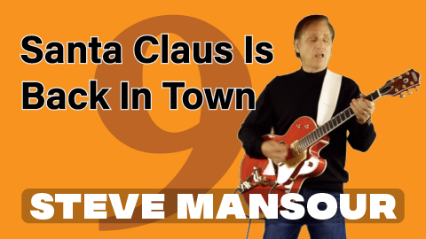

| HOME | MUSICIAN | SONG WRITER | PRODUCER |
| ★ JOIN EMAIL LIST ★ | ALBUMS | CHRISTMAS SONGS | VIDEOS | COLLABORATIONS | DOWNLOAD |
|

Behind The Scenes #7 I don't know what made me decide to start doing Christmas songs. It started back around Christmas time in 2012. My job occupied most of my time, but I still wanted to push my music forward. I knew that creating recording Christmas Songs would not take too much time. And I was pretty sure I could get some people to sit in on the recording sessions and we could have some fun with it. And now, in 2020, a lot of people consider these Christmas Song productions to be an institution -- one which I am happy to continue. One thing I really enjoy is researching which Christmas I want to do. I discover 10 or 20 Christmas songs that I had never heard before, some of these have been around for 50 years or more. When I find a song that I like, I'll listen to different versions of it. Then I'll lay down the tracks for my own version -- based on how I hear it along with a hodge-podge of parts I remember from the versions I listened to. I always try to pull in other artists to do these songs in a collaboration style. There were a few years where all my musician friends were tied up with gigs or family obligations and I had to do the song as "The Steve's". But in the past few years, I've been able to bring in multiple other musicians to participate, and they get to add their own style into the song. It's always more fun to see how they make it their own, plus it seems to put us all in more of the Christmas spirit. In 2016 I began doing videos for the Christmas songs, which makes them a lot more work. On the other hand, it tends to make it easier for me to get others to participate. :-) |